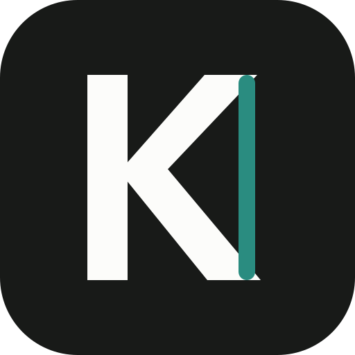
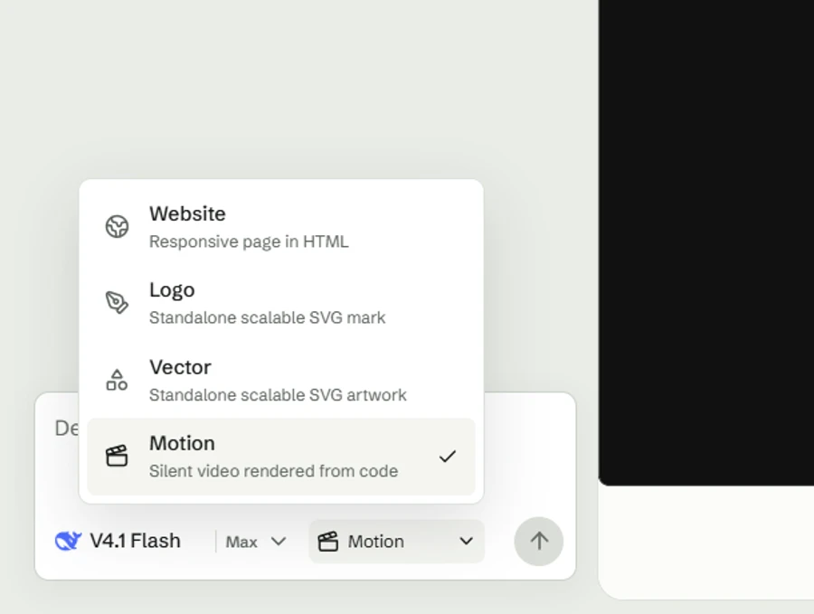
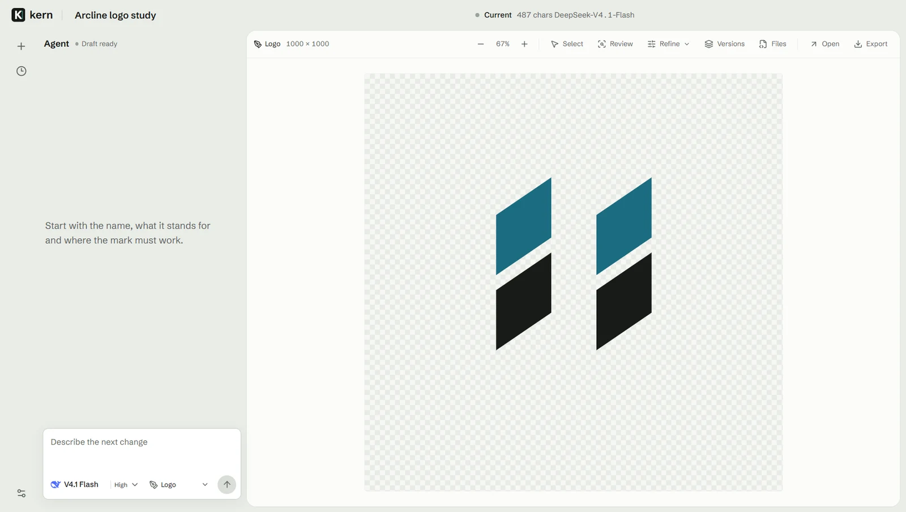
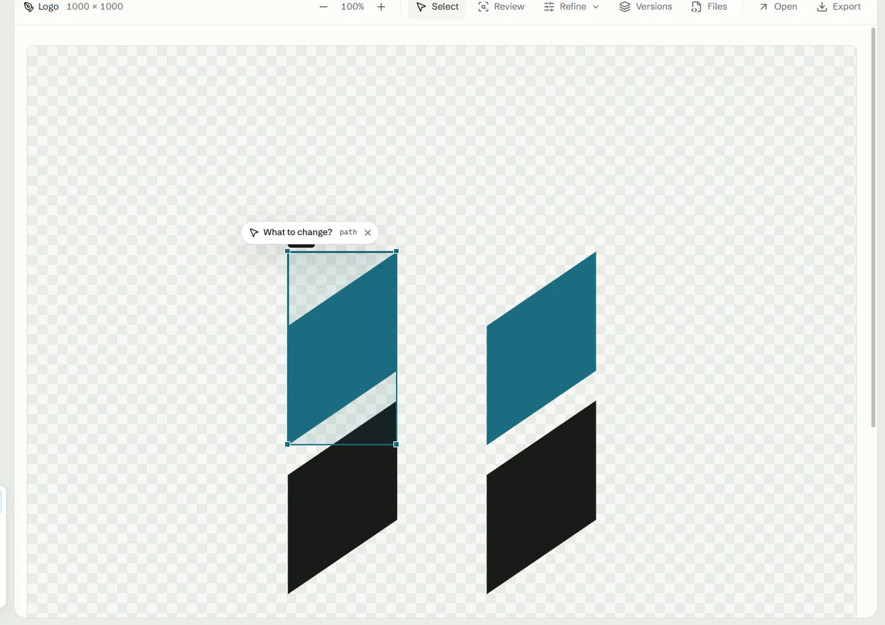

Website
Responsive HTML with real content, tested at desktop, tablet, and mobile widths.
HTML
kern Run locallyKern is a local-first desktop design agent for responsive websites, editable vector marks, and silent motion built from code. Bring your own OpenAI, Claude, Gemini, or DeepSeek key.
See it workWebsite Responsive HTML
Each mode has its own structure, constraints, review pass, and export. Kern does not wrap four capabilities in one generic template.
Responsive HTML with real content, tested at desktop, tablet, and mobile widths.
HTMLA standalone SVG mark built for small sizes, one-color reduction, and a transparent field.
SVGEditable SVG artwork with a subject-led composition and no raster fallback.
SVGA silent 1280 by 720 timeline built in code, scrubbed in the preview, and exported as WebM.
WEBM

Interface captures use sample projects. They document the working controls and canvas states, not customer work.
Research, asset fetching, composition, writing, and review appear as readable steps. There is no planner detour and no mystery while the canvas waits.
Web context is checked for every new design brief. The agent can also pull real page media into the artifact instead of inventing a substitute.
Current sources and retrieved dates stay attached to the run, so a time-sensitive claim can be checked instead of guessed.
When one heading is wrong, Kern edits that heading. Choose a rendered element and the agent receives its selector, current markup, and computed styles. The rest of the artifact stays where it is.

Use the account you already pay for. Kern reads the current text model catalog from that provider instead of shipping a frozen list.
Choose the reasoning level that model actually supports, from the same model menu used for the request.
Keys are encrypted with Electron safeStorage and decrypted in the main process only when a request is sent.
Conversations, versions, reviews, and generated artifacts stay in your local Kern data folder.
The current build runs locally in Electron. No installer is linked from this page.
npm install
npm run dev